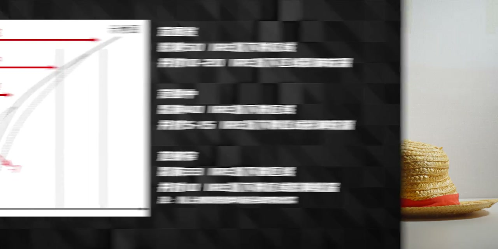
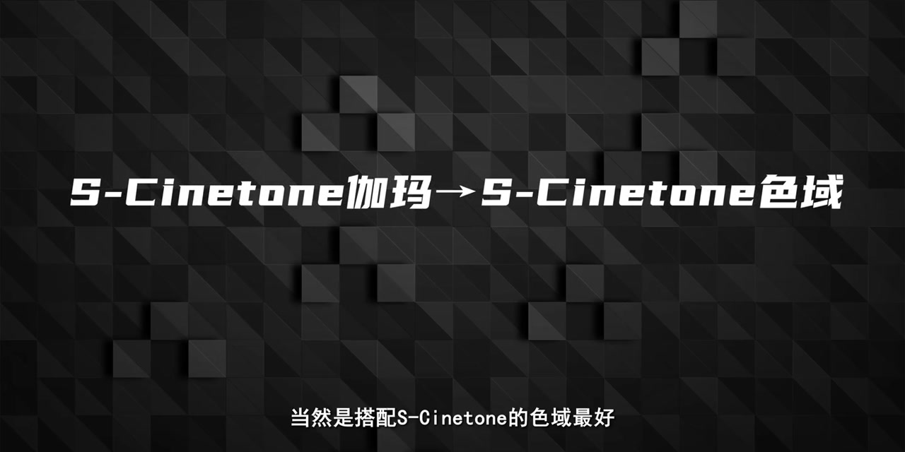
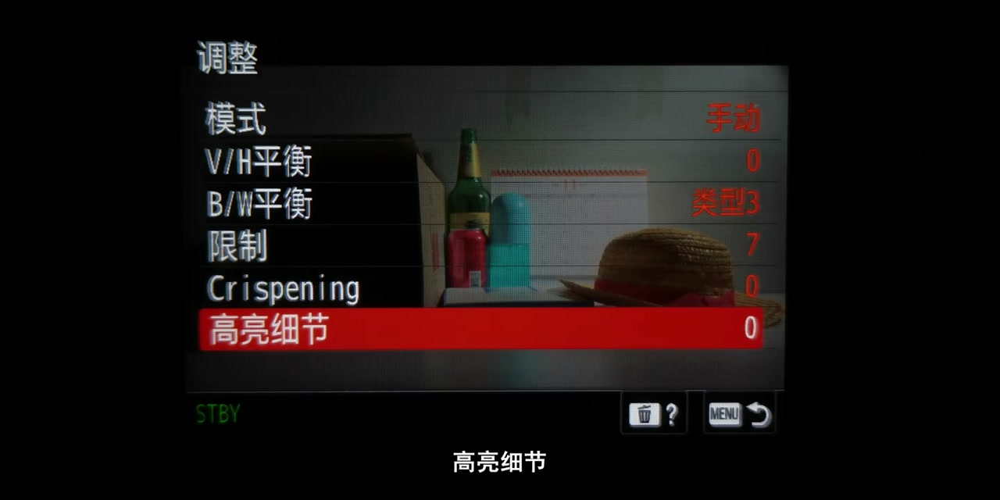

内容要点
下集把曝光监看延伸到白平衡和 PP 的其余项目：黑色等级、黑伽马、拐点、色彩模式与细节。本文整理视频中的测试思路和建议；参数名称已按常见中文术语校正，具体数值及菜单可用性仍须以相机型号、固件与官方说明为准。
用斑马线把曝光余量可视化
视频先说明 IRE 是亮度信号的刻度，并以 S-Log3 的前集测试为背景：自定义斑马线 1 使用“标准＋范围”，水平约设为 59、范围 ±2，用于提示约过曝两档的区域；自定义斑马线 2 约设为 93，作为高光开始丢失的警示。随后提到也测试了 S-Log2、HLG、S-Cinetone、Cine 与直出，但转录没有保留完整对照表。

白平衡是紧接着的前提。自动白平衡在一般环境可作为起点，但暖光和青绿光并存、或大面积蓝天等环境可能触发不符合创作意图的校正。视频建议此时改用手动色温和绿／洋红微调；“数百 K 可在后期修正”只是经验判断，原始素材的色深、肤色和混合光情况都会限制可修正幅度。
黑色等级与黑伽马：改变暗部观感，不会凭空制造细节
黑色等级直接抬升或压低画面的黑位。视频的对比结论是，抬黑更多表现为黑色发灰、噪点更显眼，新增细节很有限，因此通常不用为“救暗部”而改它；多机位直播或转播中的黑位匹配是口述提到的例外用途。
黑伽马则控制低亮度段曲线的弯曲方式，可选择影响范围并按等级调整。提高它会让暗部更易看见，同时也让原有噪点更明显；降低它可让暗部显得更干净，却可能把可恢复的信息压掉。视频倾向于在确有需要时使用较宽范围、较小正值，但没有给出跨机型可复现的量化测试。
拐点只适合特定高光题材
拐点（Knee）通过在高亮度处改变曲线斜率来压缩或拉伸高光。手动模式里的“点”决定从哪个 IRE 左右开始介入，斜率决定压缩强弱；视频特别提醒，某些机型或伽马模式下自动拐点才会生效。
作者的实拍判断是：拐点未必保留更多可后期恢复的高光，反而可能把高光抹平；日出、日落这类太阳极亮且周围细节较少的场景或有用途，但亮源周围可能出现白圈。由于没有提供各机型、各斜率的原始文件，这应视为工作流建议，不是通用性能结论。
伽马与色彩模式要成对选择
色彩模式涉及色域／色彩空间的映射。视频给出的实用搭配是：Cine 曲线配相应的 Cine 色彩模式，S-Cinetone 配 S-Cinetone 色域，HLG 配 BT.2020；S-Log 的选择则着重比较 S-Gamut3、S-Gamut3.Cine 和 S-Cinetone。其取舍不是单看“更广”：更宽的色域通常需要更准确的色彩管理和更复杂的后期转换。

视频称部分微单的广色域实现可能不完整，并推荐 S-Gamut3.Cine 以降低后期转换难度；不过并未列出完整机型、测试方法或厂商版本差异，不能据此判断某一相机的实际色域覆盖。人物 A-Roll／采访偏重肤色时，可考虑 S-Cinetone；其余场景仍需结合交付标准和后期流程决定。
细节设置与后期转换
饱和度、色相和色彩深度都能调整色彩外观，但视频认为多数情况下无需频繁改动。重点放在“细节”：它类似机内锐化，等级增大时边缘更锐利，也可能让皮肤纹理和暗部颗粒更显眼。要让 V/H 平衡、B/W 平衡、限制、Crispening 与高亮细节等子项生效，需先切到手动模式。

视频最后提到在 DaVinci Resolve 中用色彩空间转换完成 S-Log／HLG 的基础转换，也可使用 LUT。两者都依赖输入伽马、色域、时间线与输出目标设置正确；“预设可覆盖 95% 场景”是作者的概括，复杂混合光、品牌匹配和特定交付规范仍应逐镜检查。